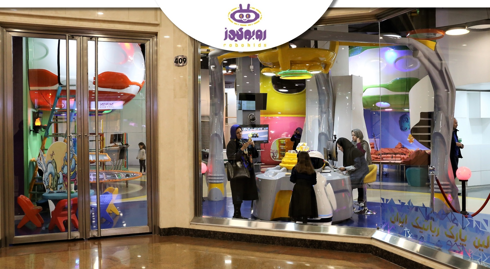

The SAMi companion robot is a first Iranian social robot that was designed and developed by Arsamrobotics from scratch. Arsamrobotics is a knowledge-based company (Startup) located in Amirkabir University of Technology's Tech. Tower, Tehran. SAMi can communicate with the human in Persian.It Also can navigate freely in the environment. SAMi and his sister ARSo came to earth from Robonus planet to find an energy source. They found that kids playing energy is the most valuable source for surviving their planet. Robokids is their high tech camp with lots of interactive and robotic games. Robokids is the first robotic child care center that used companion robots to communicate with kids.
SAMi can show his feelings with 21 real-time generated animations with strong rendering engine!
SAMi companion robot is a Semi-Autonomous high tech robot that can communicate with kids. The SAMi is a two-wheeled, differential driven mobile robot with 360 lidar system. Using its 2 DOF head can track people faces while it is speaking to them. It also has 2 DOF in each arm for hugging whom he fell in love. It also equipped with a camera, and speaker to hear and speak to humans.
My responsibilities in the project:
- CSDO & Co-Founder of Arsamrobotics
- Indoor localization and mapping (SLAM)
- SAM ROS software infrastructure designer
- Human-robot interaction and behavior modules
- Face behavior, Lip-Sync engine
- Project infrastructure for network modules
- Ground station and monitoring systems
- Robokids games interfaces
- Robokids games scoreboard system
- Robokids child care application
Arsamrobotics, 2017SAMi companion robot, version 2.0Robokids, SAMi with friends !With this novel approach, we can enroll many children all over the country to join our journey of real companion robots. SAMi also equipped with cutting-edge conferencing capabilities, and this makes him an interface between coach and kids. Using a novel approach, coaches can role-play SAMi voice and lipsync engine to teach kids in a better way. This streaming system can transfer SAMi's vision and hear to desire coach.
Robokids is an environment full of excitement and creativity along with robots that come from the planet Robonus. Play robotic games on robotic land and have robotic birthday parties.
I would like to inform you that Robokids is franchising its branches over the country as well as other countries, if you are interested in holding a branch or investing in the project, please send me your name and your request via eb@arsamrobotics.com
For more information please visit the Arsamrobotics/Robokids webpages :
www.arsamrobotics.com
www.robokids.funRobokids, Galleria shopping center, Tehran, IranSAMi Congratulates Iranian Norooz (New Year) in Persian
SAMi a closer look